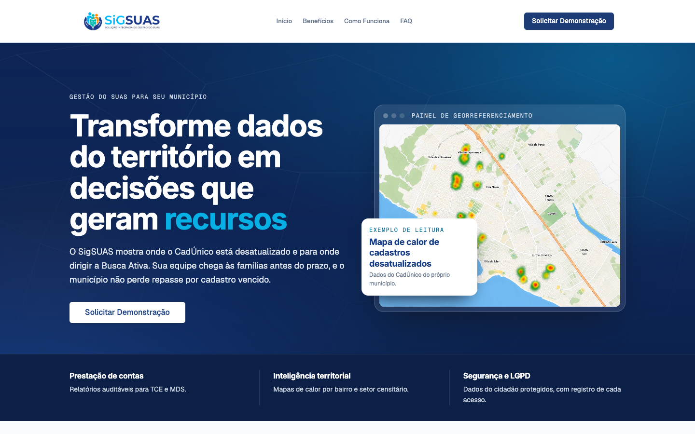
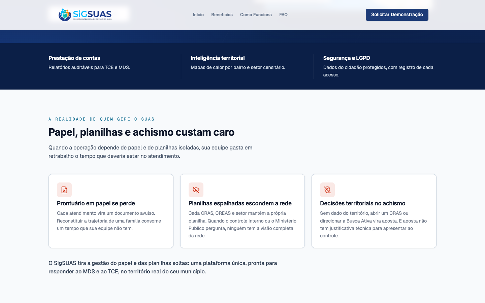
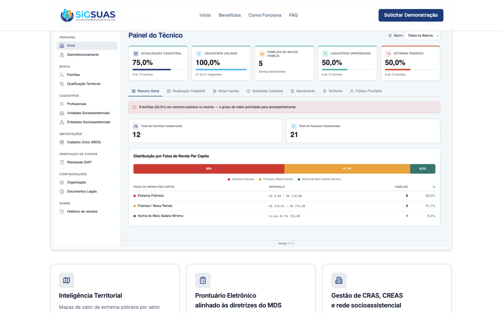
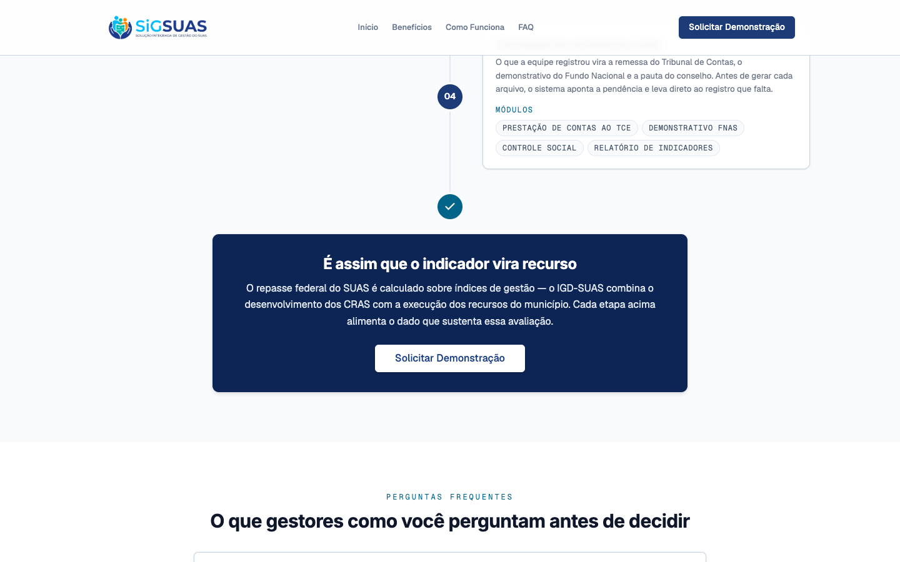
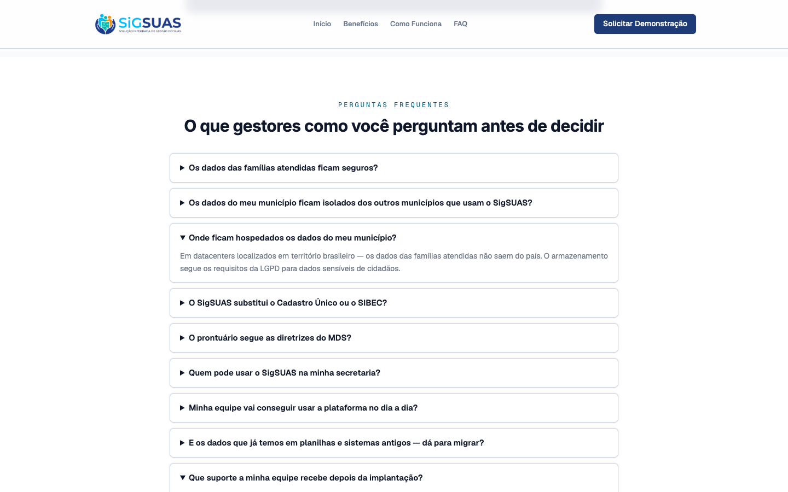
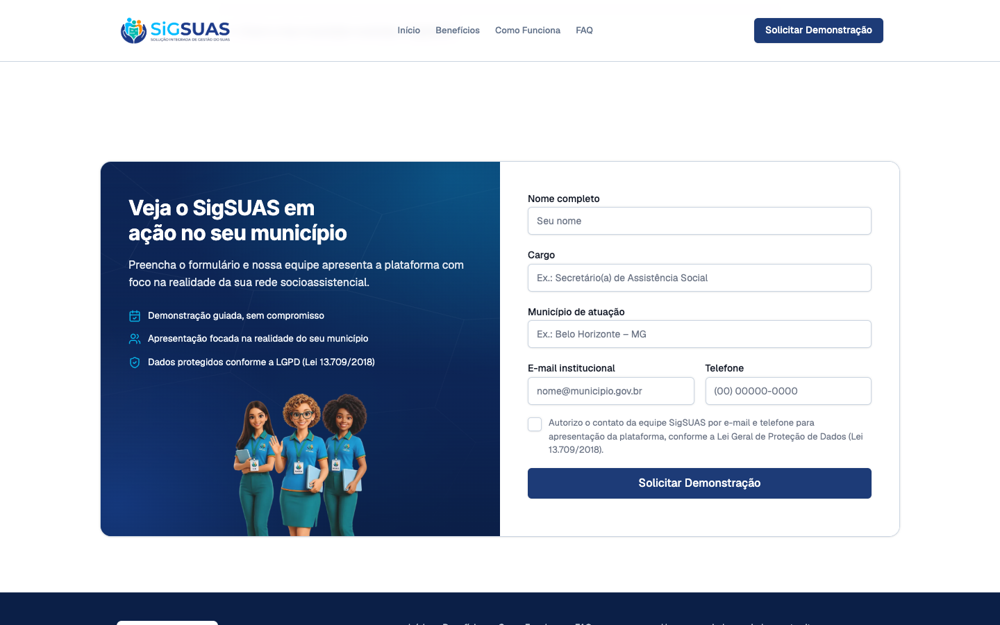
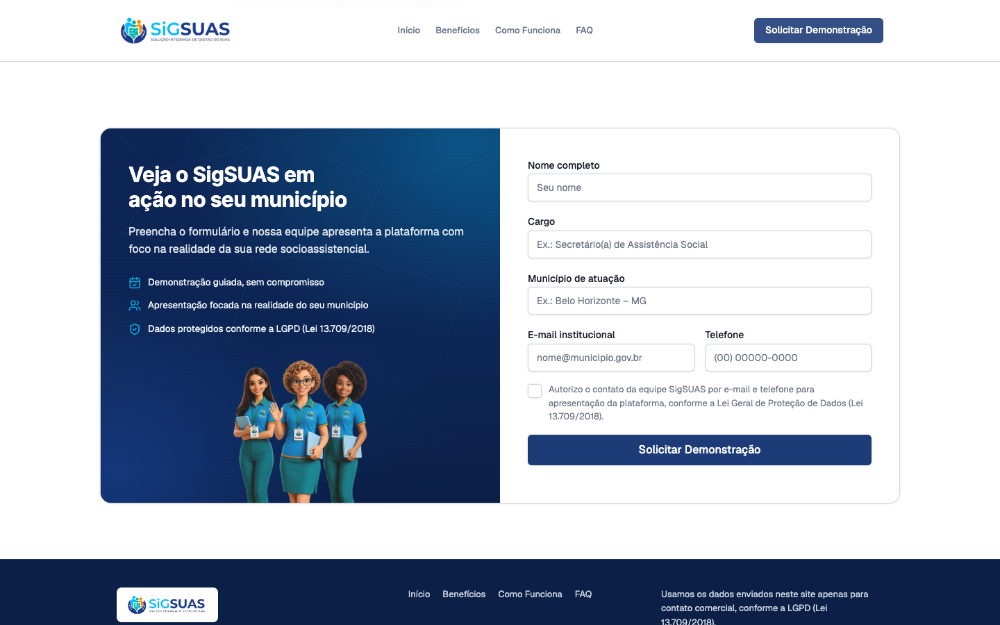

2 critérios de aceite, ambos evidenciados por navegador sobre o build real da landing refinada (hero v6 'decisões que geram recursos', seção de dor simplificada com ícones, FAQ de 10 itens, desfecho do IGD-SUAS no fundo do hero, conformidade MDS/TCE). CA01 comprovado por 6 capturas na ordem de leitura; CA02 comprovado por clique real nos CTAs com rolagem suave até o formulário, com apoio da suíte automatizada (30 cenários aprovados + 2 pulados).
| CA | Critério | Status |
|---|---|---|
| CA01 | Aprovação dos novos textos e fluxo de leitura | ATENDIDO · navegador |
| CA02 | Otimização do ponto de conversão | ATENDIDO · navegador + automatizado |
Critério (Gherkin): Dado que os novos textos e ajustes de seções foram aplicados, Quando um visitante navega pela Landing Page, Então a leitura flui de forma lógica e contínua, permitindo compreender a solução completa em menos de 2 minutos de navegação.
Como foi testado: Abrir o build real da landing em 1440×900 e percorrer a página inteira na ordem de leitura, capturando cada estação do argumento: promessa (hero), dor, solução (benefícios), mecanismo (como funciona + desfecho do IGD-SUAS), objeções (FAQ) e ação (formulário).






Critério (Gherkin): Dado que o visitante clica em qualquer um dos botões de chamada para ação (CTA) refinados da página, Quando o comando é disparado, Então a tela rola suavemente (smooth scroll) e foca a atenção diretamente no formulário de solicitação de demonstração.
Como foi testado: Partindo do topo da página, clicar no CTA Solicitar Demonstração do header e, em novo teste, no CTA do hero. Medir por script a posição de aterrissagem do formulário e o valor computado de scroll-behavior.

Não existe story oficial para a HU #10145 no repositório; os critérios foram extraídos literalmente do ticket GLPI. O refinamento de conteúdo evidenciado corresponde ao trabalho entregue em develop até o commit d06be5f do repositório da landing (hero v6, seção de dor simplificada, FAQ de 10 itens, conformidade MDS/TCE, desfecho do IGD-SUAS).
O limite de "menos de 2 minutos" do CA01 não é mensurável de forma objetiva por instrumento — a evidência apresentada é estrutural: 6 estações de leitura, uma ideia por seção, ação única. A aprovação final do fluxo de leitura é, por natureza, julgamento do Product Owner sobre as capturas.
Running 32 tests using 5 workers - 2 [desktop] › tests/e2e/landing.spec.ts:166:1 › CA02 — em viewport mobile o menu vira hambúrguer (Sheet) ✓ 1 [desktop] › tests/e2e/landing.spec.ts:34:1 › CA01 — página única com as 8 seções da estrutura v2 (734ms) ✓ 3 [desktop] › tests/e2e/landing.spec.ts:84:1 › HERO-V5 — hero assimétrico com vitrine e faixa de indicadores (767ms) ✓ 5 [desktop] › tests/e2e/landing.spec.ts:59:1 › BENEFITS-SHOWCASE — benefícios abrem com o Painel do Técnico e 5 cards uniformes (802ms) ✓ 4 [desktop] › tests/e2e/landing.spec.ts:116:1 › HOW-IT-WORKS-TIMELINE — 4 atos com 4 módulos cada e desfecho de resultado (855ms) ✓ 8 [desktop] › tests/e2e/landing.spec.ts:219:1 › LEAD-PANEL — painel territorial da seção de demonstração mantém copy e equipe (489ms) ✓ 7 [desktop] › tests/e2e/landing.spec.ts:202:1 › V2-FAQ — accordion nativo abre e fecha as perguntas (570ms) ✓ 10 [desktop] › tests/e2e/landing.spec.ts:256:1 › L3 — honeypot preenchido é aceito em silêncio (proteção anti-bot) (608ms) ✓ 9 [desktop] › tests/e2e/landing.spec.ts:246:1 › CA05 — envio válido exibe a mensagem exata de sucesso (modo mock) (711ms) ✓ 11 [desktop] › tests/e2e/landing.spec.ts:271:1 › CA06 — município vazio bloqueia envio e destaca o campo (446ms) ✓ 13 [desktop] › tests/e2e/landing.spec.ts:292:1 › A11Y-FOCUS — foco visível por teclado nas superfícies clara e escura (282ms) ✓ 14 [desktop] › tests/e2e/landing.spec.ts:325:1 › A11Y-FAQ-KEYBOARD — perguntas do FAQ operáveis por Enter e Espaço, com foco visível (308ms) ✓ 12 [desktop] › tests/e2e/landing.spec.ts:281:1 › V2-CONSENT — consentimento LGPD desmarcado bloqueia o envio (529ms) ✓ 15 [desktop] › tests/e2e/landing.spec.ts:348:1 › A11Y-HEADINGS — um único h1 e hierarquia sem salto de nível (193ms) ✓ 16 [desktop] › tests/e2e/landing.spec.ts:361:1 › FOOTER-DARK — footer escuro com 4 links rápidos, sem "Demonstração" (281ms) ✓ 17 [mobile] › tests/e2e/landing.spec.ts:34:1 › CA01 — página única com as 8 seções da estrutura v2 (263ms) ✓ 18 [mobile] › tests/e2e/landing.spec.ts:59:1 › BENEFITS-SHOWCASE — benefícios abrem com o Painel do Técnico e 5 cards uniformes (357ms) ✓ 19 [mobile] › tests/e2e/landing.spec.ts:84:1 › HERO-V5 — hero assimétrico com vitrine e faixa de indicadores (262ms) - 21 [mobile] › tests/e2e/landing.spec.ts:183:1 › V2-NAV — âncoras do header e do CTA levam às 5 seções ✓ 23 [mobile] › tests/e2e/landing.spec.ts:219:1 › LEAD-PANEL — painel territorial da seção de demonstração mantém copy e equipe (238ms) ✓ 22 [mobile] › tests/e2e/landing.spec.ts:202:1 › V2-FAQ — accordion nativo abre e fecha as perguntas (362ms) ✓ 24 [mobile] › tests/e2e/landing.spec.ts:116:1 › HOW-IT-WORKS-TIMELINE — 4 atos com 4 módulos cada e desfecho de resultado (355ms) ✓ 20 [mobile] › tests/e2e/landing.spec.ts:166:1 › CA02 — em viewport mobile o menu vira hambúrguer (Sheet) (989ms) ✓ 6 [desktop] › tests/e2e/landing.spec.ts:183:1 › V2-NAV — âncoras do header e do CTA levam às 5 seções (3.3s) ✓ 27 [mobile] › tests/e2e/landing.spec.ts:271:1 › CA06 — município vazio bloqueia envio e destaca o campo (509ms) ✓ 29 [mobile] › tests/e2e/landing.spec.ts:325:1 › A11Y-FAQ-KEYBOARD — perguntas do FAQ operáveis por Enter e Espaço, com foco visível (204ms) ✓ 30 [mobile] › tests/e2e/landing.spec.ts:348:1 › A11Y-HEADINGS — um único h1 e hierarquia sem salto de nível (175ms) ✓ 32 [mobile] › tests/e2e/landing.spec.ts:361:1 › FOOTER-DARK — footer escuro com 4 links rápidos, sem "Demonstração" (239ms) ✓ 31 [mobile] › tests/e2e/landing.spec.ts:292:1 › A11Y-FOCUS — foco visível por teclado nas superfícies clara e escura (244ms) ✓ 28 [mobile] › tests/e2e/landing.spec.ts:281:1 › V2-CONSENT — consentimento LGPD desmarcado bloqueia o envio (1.3s) ✓ 25 [mobile] › tests/e2e/landing.spec.ts:246:1 › CA05 — envio válido exibe a mensagem exata de sucesso (modo mock) (2.8s) ✓ 26 [mobile] › tests/e2e/landing.spec.ts:256:1 › L3 — honeypot preenchido é aceito em silêncio (proteção anti-bot) (2.7s) 2 skipped 30 passed (7.0s)